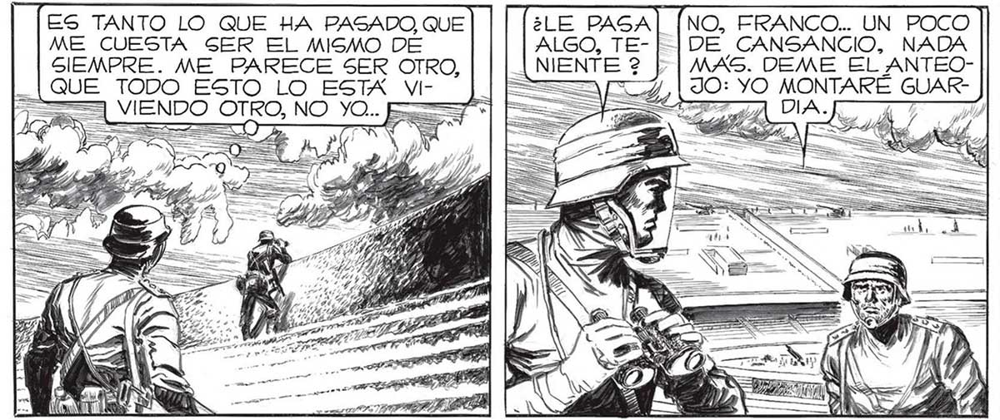
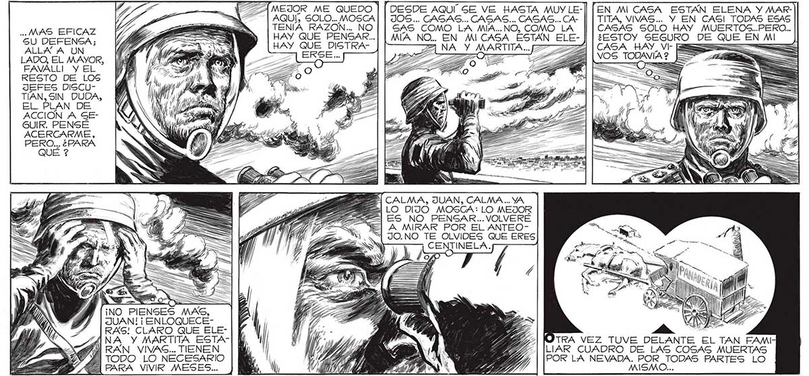

ES TANTO LO QUE HA PASADO QUE y (NO, FRANCO.. UN POCO ME CUESTA SER EL MISMO DE DE CANSANCIO, NADA SIEMPRE. ME PARECE SER OTRO, : MAS. DEME EL ANTEOsl SUE TODO ESTO LO ESTA Yi HACER DE CENTINELA ME DISTRAERA.... MOSCA DIJO BIEN : LO MEJOR ES NO PENSAR. NO PENSAR 0. 1,25 == 4, 190: YO MONTARÉ GUARVIENDO OTRO, NO YO. == => ] 7 o a A | o Yo Quevé SoLo. ATRAS Y ABAJO TENÍA LA BULLENTE ACTIVIDAD DEL ESTADIO : LOS SOLDADOS SEGUÍAN APRESTANDOLO PARA HACER... hase a A AMEJOR ME QUEDO | | DESDE AQUÍ SE VE HASTA MUY LE] | | al AQUÍ, SOLO... MOSCA| | JOS... CASAS... CASAS... CASAS... CA- || | TITA, VIVAS... Y EN CAGI TODAS ESAS MAS EFICAZ >, [TENIA RAZON... NO| | SAS COMO LA MIA..NO, COMO LA | |CASAS SOLO HAY MUERTOS..PERO.. "SU DEFENSA; LA ES ) | HAY QUE PENSAR...| | MIA NO. EN MI CASA ESTÁN ELE- ) | ¿ESTOY SEGURO DE QUE EN MI AULAA UN — WEY isa 05 HAY QUE DISGTRA- ZAANA Y MARTITA.. === : LADO, EL MAYOR, [HE LTCAWE MENA se YN _HEE EEES > => e EAVÁLLI y EL 7 De / A Wo AE A D) á > Z E 5 , A — E RESTO DE LOS ( ERAN Y A SE E EP" s A YA E JEFES DISCU- MIES : TIAN, SIN. DUDA, is EL PLAN DE y | 1000 a, ACCION A SE- AAA y GUIR. PENSÉ Ñ ACERCARME, PERO... ¿PARA EN MI CASA ESTÁN ELENA Y MAR21] CALMA, JUAN, CALMA... YA Es] LO DIJO MOSCA: LO MEJOR ES NO PENSAR... VOLVERE A MIRAR POR EL ANTEO1 JO.NO TE OLVIDES QUE ERES CENTINELA. ¡NO PIENSES MA JUAN! ¡ ENLOQUÉCERAG! CLARO QUE ELEnr/ós s TEE, | OTRA VEZ TUVE DELANTE EL TAN EAMI 1 de | WIR 73 | |[LIAR CUADRO DE LAS COSAS MUERTAS A TODO LO NECESARIO le ASAS A BAN VÍ, | [POR LA NEVADA. POR _ TODAS PARTES LO EE BARA VIVIR MESES... Pl, MUY AA Y "a MISMO...

